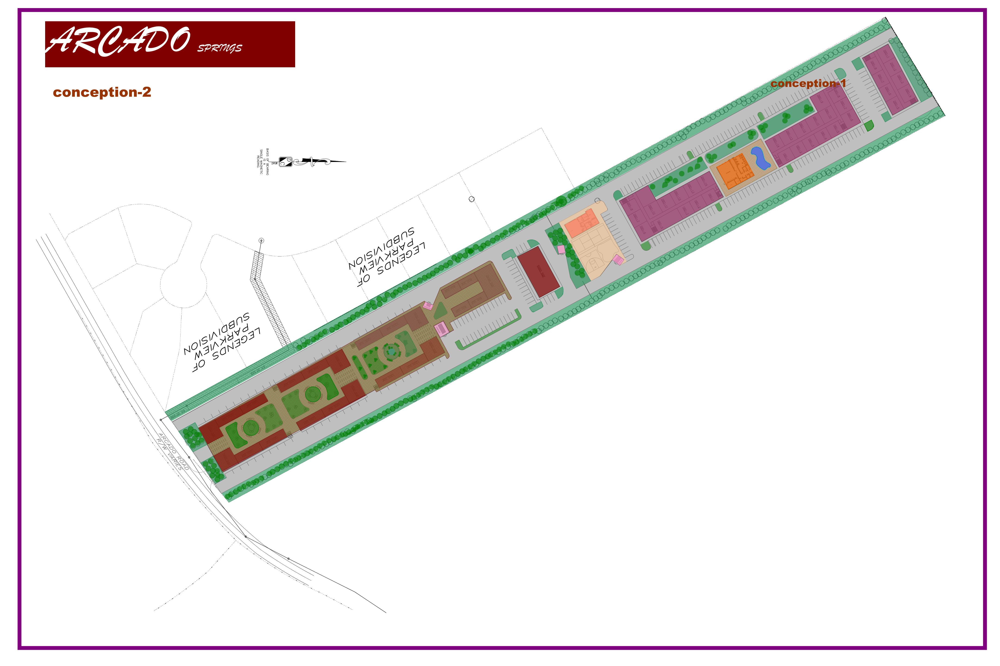
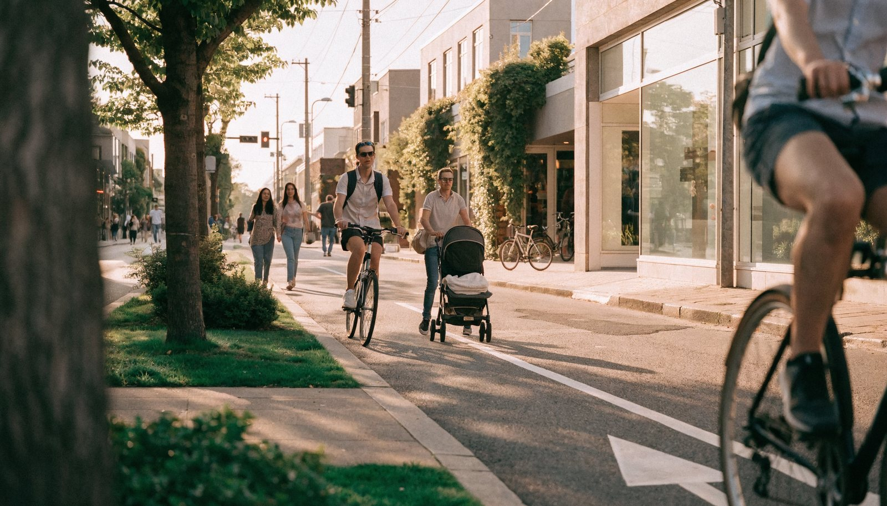
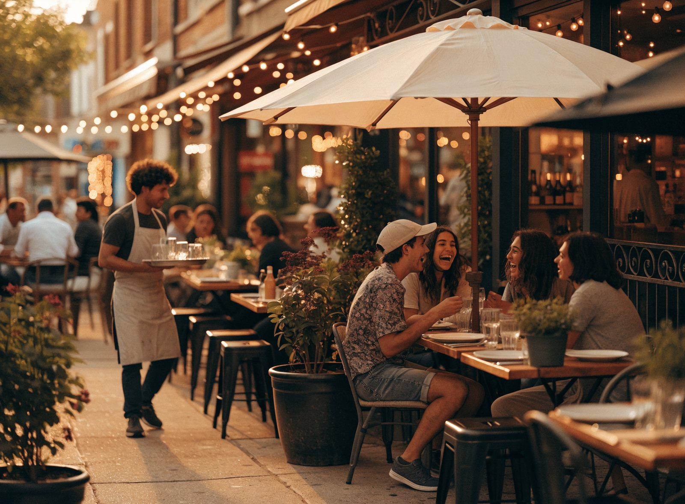
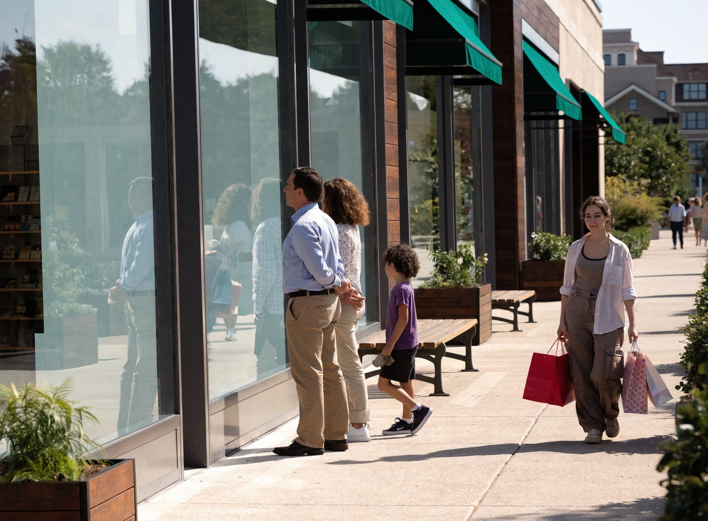
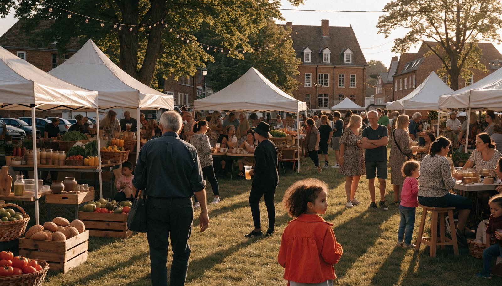
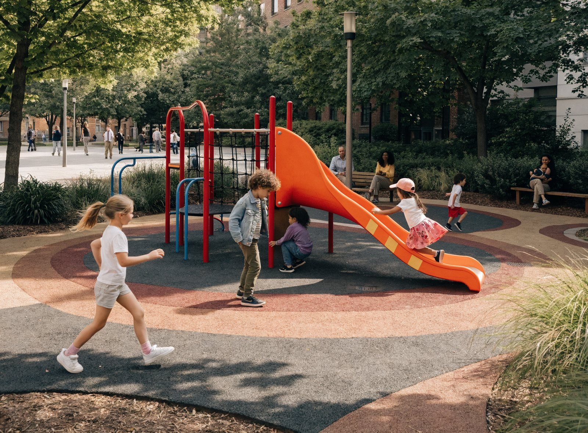
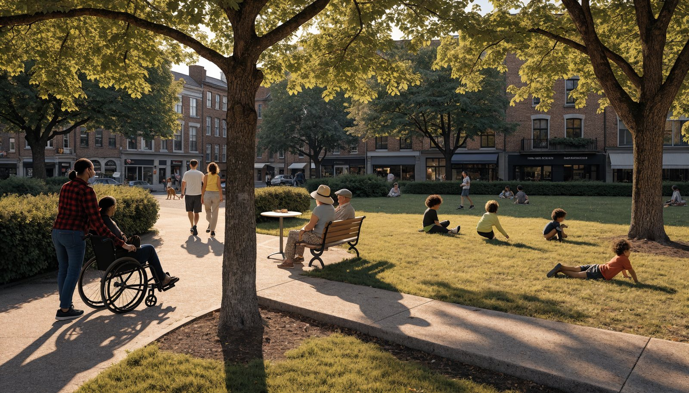

Residents
See exactly what’s coming to your corner and weigh in before it’s built.
Share your view →Arcado Springs — A new town center on Arcado Road · Lilburn, GA
Arcado Springs is a real-time, interactive 3D walkthrough of a proposed walkable town center: stroll the main street, step into the shops and dining, and even drive the route home. See exactly what’s being planned — and tell us what you think while it can still change.
In-engine preview of a proposed development.
The vision
Arcado Springs is a proposed mixed-use community: a compact, walkable town center of shops and dining woven into the streets beside the Legends of Parkview neighborhood. Instead of asking you to read it off a blueprint, we built it as a living place you can explore — street-level retail, restaurants with patio seating, and green public space.
Move through the storefronts, sit at the café tables, follow the sidewalks to the corner, and get behind the wheel to drive the streets the way you would on any ordinary afternoon. This isn’t a marketing flythrough — it’s a real-time 3D model built in Unity 6, sized to the actual parcel, so what you walk is what is genuinely being proposed.
Storefronts and restaurants at street level, with public space to gather.
A main street and central plaza designed to be crossed on foot, not just driven past.
Over a third of the site kept green — room to gather, walk, and breathe.
Sited beside the existing neighborhood it’s meant to serve.
Interactive walkthrough
A real-time 3D build of the master plan, running live in your browser — built from the same model as the plans below. The visuals are real-time game-engine graphics (think a handheld-console look rather than the offline, photoreal renders elsewhere on this page), traded for the freedom to move through the space yourself. Use W/A/S/D or the arrow keys to walk and the mouse to look around. Best on a desktop or laptop, full-screen.
It streams a large (around 100 MB) real-time build to your device, so it runs best on a desktop or laptop over broadband, and the first load takes a bit — give it a moment after you press Launch while it downloads.
Loads a real-time 3D build · best on desktop
Loading walkthrough…

Interactive walkthrough — live build deploying soonChecking for the live build…
Life at Arcado Springs
How the town center is designed to feel — neighbors walking the main street, gathering over dinner, and shopping local.



Lifestyle images are AI-generated impressions of the proposed design, not photographs.
Credibility anchor
Residents trust a drawing they can read. This is the proposal’s master plan — pan and zoom to inspect the retail frontage, central plaza, dining patios, parking, and the neighborhood edge.
At a glance
Nine acres reimagined as a walkable town center — retail, dining, recreation, and open green space for the whole neighborhood.
Why it helps the community
Flat site plans and zoning maps are hard to picture. Arcado Springs lets you walk the actual streets, look up at the buildings, and feel the scale at eye level — so the proposal is something you experience, not something you have to imagine.
No app to download and no meeting to attend — just open a link on your phone or computer. That reaches neighbors who can’t make a Tuesday-night town hall: parents at home, shift workers, and people who simply learn better by exploring than by reading a packet.
Most opposition to new development comes from uncertainty about what’s really coming. Showing the design openly and at full scale replaces rumor with fact, lowers the friction of “not in my backyard,” and gives the community an honest basis for its concerns and its support.
Walking the plan surfaces real questions about traffic flow, building height, parking, and walkability while they’re still lines in a model. Catching a scale or circulation problem now costs a design revision — catching it after construction costs a fortune.
Residents who are elderly, have mobility limitations, work during public-comment hours, or live too far to drive in can all take the same tour from home. Participation stops depending on who can physically show up.
The walkthrough showcases each retail and dining space the way a future tenant or investor would experience it, helping fill storefronts sooner. A clearly understood, well-supported project is also one that moves forward — turning a proposal into local jobs and a place to gather.
More than a place to shop
A town center earns its place by what happens between the storefronts — a market on the green, kids at play, neighbors meeting on the court, and open space anyone can enjoy.



Community images are AI-generated impressions of the proposed design, not photographs.
Traffic & Mobility
The simplest way to ease traffic is to keep cars off the road in the first place. When homes, shops, dining, and offices sit on one walkable site, a meaningful share of everyday trips never need a car at all — you walk from your door to the café or to lunch. And the trips that still need a car are shorter, because the destination is right here instead of a drive away. The result is fewer cars, for fewer miles, spending less time on Arcado Rd and the roads around it.

Arcado Rd is a two-lane collector that funnels subdivision and school traffic — Parkview High, Trickum Middle, Arcado Elementary, and Killian Hill Christian — onto its signalized corner with Killian Hill Rd, the area’s main arterial. Today every errand starts with a drive out to a distant store or onto a busy arterial, and the morning and afternoon school peaks concentrate that demand into a few tight hours. Killian Hill is already being widened from two lanes to five between Arcado Rd and Church St (a roughly $25M project), which tells you capacity here is the chief concern.
When homes, shops, and dining share one site, many trips start and end inside it — a resident walks to coffee, a worker walks to lunch — so that car trip is never made on Arcado Rd at all. Planners call this internal capture, and for mixed-use sites it commonly runs about 15–30% of trips overall, and even higher in the evening peak (measured at roughly 33–44% in studies behind NCHRP Report 684).
Even drives that do use the road cover fewer miles when groceries, dining, and services are nearby instead of across town. Each car clears the roadway faster and takes up less capacity per trip. Across the research, how close your destinations are is the single strongest predictor of how much people drive (Ewing & Cervero, 2010).
A walkable mix lets you bundle errands — coffee, a package, a few groceries — into one stop or one short loop on foot, rather than three separate round-trips from home. Fewer separate drives means fewer cars turning in and out at intersections and driveways. The benefit is largest exactly when destinations are close enough to chain on foot, which is what a compact site provides.
Most car trips are short: nationally about 52% of all daily trips are under 3 miles and roughly 28% are under 1 mile (2022 National Household Travel Survey). Safe sidewalks, walkable streets, and a bike lane let a real share of those short trips happen on foot or by bike — removed from the road entirely rather than added to it.
When daily needs sit on-site, residents stop driving out to a far commercial node for routine errands — the longest, most road-heavy trips of suburban life. Compact, mixed-use development is estimated to cut total vehicle miles traveled by roughly 20–40% compared with dispersed, single-use development (EPA Smart Growth; ULI Growing Cooler; National Academies).
On-site destinations let people run errands off-peak and on foot, smoothing demand instead of piling it into the school and commute rushes. Internalized trips also skip the Arcado-at-Killian-Hill corner entirely, easing the left-turn and merge conflicts that cause the most delay. The evening pull-off is strongest — about a third or more of activity stays off the external roads precisely when arterials are busiest.
No single feature fixes traffic on its own — the gains come from stacking them: trips captured on-site, the rest made shorter, errands chained into one outing, and short hops shifted to walking and biking. Together, a genuinely walkable mixed-use site puts fewer cars on Arcado Rd, for fewer miles, with less pressure at the Killian Hill peaks. It complements the road widening already underway rather than competing with it.
▶ See the before / after traffic simulation — satellite view + animated car flow
These figures are general planning estimates drawn from national, peer-reviewed transportation research (ITE/NCHRP, the National Household Travel Survey, EPA Smart Growth, and Ewing & Cervero). They are real and well-documented but site-specific: actual results depend on the land-use mix, how walkable the site truly is internally, and how well it connects to its surroundings — so they should be read as ranges, not guarantees. The accompanying heat map is an illustrative schematic of typical corridor conditions, not measured traffic counts.
How it works
Open the walkthrough from any link on your phone or computer — nothing to install.
Choose to explore on foot through the shops, dining, and streets, or hop in the car to drive the route.
Move through the town center at true scale and watch the lighting shift from day toward dusk.
Notice what works and what gives you pause — the scale of a building, a crossing, a parking area, a sightline.
Share your feedback through the engagement form, and help shape the design before construction begins.
Who it’s for
See exactly what’s coming to your corner and weigh in before it’s built.
Share your view →Tour the storefronts and patios the way a future tenant would, and find your place.
Express interest →Inspect circulation, parking, and scale against the real CAD plan, at 1:1.
Review the plan →This preview sits early in the public planning process — before final approvals. Feedback collected here is summarized for the project team and the planning record, so your input is part of how the design moves forward.
Proven elsewhere
Five walkable town centers in metro Atlanta’s suburbs — most in Gwinnett County, the same county as Lilburn — offer a tested playbook for what Arcado Springs is attempting: turning an underused site into a community’s social heart with a programmed public green, walkable local dining, and homes. Each took a declining or stalled site and made it the place a suburb gathers, and each generated measurable follow-on investment and a real calendar of community life. They differ widely in scale and in who paid for them, so they’re best read as proof of the pattern, not as forecasts.
The pattern that repeats A programmable public green is built first as the social anchor; walkable, local-favored dining and shops cluster around it; a steady calendar of concerts, farmers markets, run clubs, and holiday lighting turns visitors into regulars — and that community life then pulls private investment and lifts the whole area. The green is the magnet; the programming is what makes it a third place. That DNA is scale-independent, which is exactly why it maps onto a ~9-acre Lilburn project.
Duluth, Georgia (Gwinnett County) — ~10 miles northeast of Atlanta
A “dead downtown” of consignment shops and a Big Lots that, anchored by a 2001 Town Green and amphitheater and then the Parsons Alley restaurant district, became a walkable dining-and-events destination — the clearest local proof that a public green plus a catalytic restaurant block can revive a struggling core.
Suwanee, Georgia (Gwinnett County) — ~19,000–20,000 residents
A built-from-scratch town center whose civic core began as a single 10-acre park — almost exactly Arcado’s footprint — and grew into the social heart of a fast-growing suburb drawing ~200,000 visitors a year.
Peachtree Corners, Georgia (Gwinnett County) — incorporated 2012, ~50,000 residents
A young suburb with no historic downtown built itself a walkable one from scratch — a Town Center anchored by a ~2-acre Town Green — proving a modest green plus a tight restaurant cluster can become a community’s living room.
Alpharetta, Georgia (North Fulton, metro Atlanta) — ~25 miles north of Atlanta
A civic-anchored downtown that grew walkable dining from ~5 restaurants to ~40–50 by favoring local, chef-driven tenants over chains — the clearest precedent for a “no corporate chains” programming-led identity.
Alpharetta, Georgia (North Fulton, metro Atlanta) — 400 Avalon Blvd
The 86-acre regional benchmark that proved a stalled, foreclosed suburban site can become metro Atlanta’s most-emulated walkable town center — included as the directional “what’s possible at scale,” not a one-to-one comparison.
A human thread runs through them: a recurring run club at Duluth, Alpharetta, and Avalon — the small, weekly ritual that turns a public green into a place people belong to.
These are precedents, not guarantees. Every project here differs from Arcado Springs in scale, timeline, and funding: most were city-led, voter- or municipally-funded efforts (Suwanee’s $17.7M bond, Peachtree Corners’ and Alpharetta’s public-private partnerships) executed over 10–20+ years, and Avalon is roughly 9–10x Arcado’s footprint at a ~$1B regional scale. A ~9-acre, privately led Lilburn project will not reproduce their dollar figures, tenant counts, or civic anchors, and several headline numbers here are official estimates, developer-reported figures, or projections rather than audited results. Property-value gains near these centers correlate with the developments but also with broader regional growth, so causation should not be overstated. What these cases reliably demonstrate is the pattern — a programmed public green plus walkable local dining can become a genuine community heart — not the specific outcomes any one site will achieve.
This is your neighborhood
Take ten minutes to walk Arcado Springs and tell us what you think. The plan is still being shaped, and your perspective — on the streets, the shops, the traffic, and the spaces in between — is what makes it better. The earlier you weigh in, the more your voice can change.